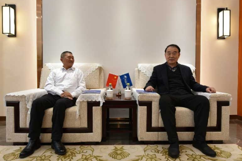
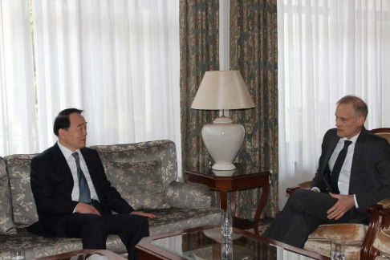

-
 李保东秘书长会见世界知识产权组织中国办事处主任刘华
李保东秘书长会见世界知识产权组织中国办事处主任刘华 -

李保东秘书长会见汶川县委书记张通荣
-

博鳌亚洲论坛秘书长李保东会见波兰驻华大使赛熙军
- 你的当前位置
- /
- 新闻中心
- /
- 新闻动态
2021-01-01
潘基文理事长新年贺词2021
2020-12-23
潘基文理事长向博鳌大家庭致以新春问候
2020-12-23
中日合作推动建设面向碳中和的智慧健康城市
12月22日，中日新时代健康论坛框架下的“中日新时代健康城市的创建”分论坛成功举办。来自中日两国的政府官员、专家学者和企业家汇聚一堂，为合作推动面向碳中和的智慧健康城市建设建言献策。 与会的中国青岛市副市长薛庆国、保定……
2020-12-22
携手绿色发展，共倡健康生活 ——博鳌亚洲论坛举办中日新时代健康论坛
12月22日，博鳌亚洲论坛在全球健康论坛大会框架下，与日本医疗国际化机构联合举办中日新时代健康论坛。中国全国人大常委会副委员长陈竺、博鳌亚洲论坛副理事长周小川、秘书长李保东、全球健康论坛大会主席陈冯富珍、中国驻日本大使……
2020-12-17
潘基文理事长在博鳌亚洲论坛亚洲减贫报告2020发布会上的讲话
各位阁下， 女士们、先生们： 我谨代表博鳌亚洲论坛感谢各位拨冗出席今天的发布会，谢谢各位对我们减贫工作的大力支持。 “在世界各地消除一切形式的贫困”是联合国2030年可持续发展目标的第一项目标。当联合国在2015年首次设立可持……
2020-12-16
尼泊尔驻华大使潘迪在博鳌亚洲论坛《亚洲减贫报告2020》发布会上发表致辞
12月15日，尼泊尔驻华大使潘迪出席博鳌亚洲论坛《亚洲减贫报告2020》发布会并发表致辞。 潘迪大使在致辞中表示，中国取得了世界范围内前所未有的减贫成就。四十年来，中国有8亿人口成功脱贫。中国取得瞩目的减贫成就，得益于中国政……
2020-12-14
新开发银行行长马科斯·特罗约谈开发性银行在全球化的变形中可发挥重要作用 ——亚欧合作对话峰会……
新开发银行行长、巴西前经济部副部长马科斯·特罗约（Marcos Prado TROYJO）在亚欧合作对话峰会专题分会上指出，当今世界正在呈现的最重要的动态是转型中的全球化，他也称之为“全球化的变形过程”。他认为，人类现在可能正在……
2020-12-14
亚投行第一任首席经济学家埃里克·伯格洛夫谈新兴经济体如何应对全球价值链变化 ——亚欧合作对话……
亚洲基础设施投资银行第一任首席经济学家埃里克·伯格洛夫（Erik Berglof）在亚欧合作对话峰会专题分会上指出，过去20年中全球化发生了变化，其中最重要的方面可能是全球价值链的变化。全球价值链看起来的确非常活跃，发展非常迅速，但……